교통기사 (2019-04-27 기출문제)
1과목: 교통계획
1. 「지능형교통체계 기본계획 2020」의 추진전력으로 옳지 않은 것은?
- 혼잡·사고의 사후관리
- 교통수단, 여행자 중심
- 공공과 민간의 상호협력
- 이동 구성요소간 무선통신
(정답률: 71%)

2. 다음 교통량에 따른 PHF값은 얼마인가?
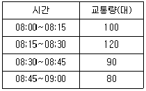
- 0.8125
- 0.8825
- 0.9425
- 0.9825
(정답률: 84%)
3. 지하철의 요금이 1200원일 때 승객수요는 8000명이다. 수요탄력성이 –1.5일 때, 지하철 요금이 1300원으로 인상되는 경우의 수요는 얼마인가?
- 4500명
- 5500명
- 6000명
- 7000명
(정답률: 75%)
4. A도시 내 백화점 주차특성 조사 결과가 아래와 같으며, 신축예정인 어느 백화점의 건물연면적(상면적)이 22350m2 일 때 원단위법에 의해 산정한 목표연도의 주차수요대수는? (단, 목표연도는 5년 후이다.)
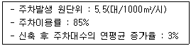
- 131대
- 152대
- 145대
- 168대
(정답률: 61%)
5. 다음 중 교통수단선택을 예측하는데 사용되는 모형이 아닌 것은?
- 로짓모형
- 통행단모형
- 간섭기회모형
- 통행교차모형
(정답률: 71%)
6. 교통감응신호기에 대한 설명으로 옳지 않은 것은?
- 설치비용이 고가
- 단시간 교통수요 변화에 적응 가능
- 비첨두시간에 과다한 지체 발생 가능
- 단속류를 연속류와 같은 흐름으로 유도 가능
(정답률: 85%)
7. 교통수요 예측을 위한 자료 조사 방법인 우편에 의한 회수법에 대한 설명으로 옳지 않은 것은?
- 조사비용이 적게 든다.
- 회수율이 저조할 수 있다.
- 응답자를 통제하기 용이하다.
- 숙련된 조사원이 필요하지 않다.
(정답률: 91%)
8. 다음 중 4단계 교통수요 추정방법에 대한 설명으로 옳지 않은 것은?
- 단계별로 적절한 모형의 선택이 가능하다.
- 계획가나 분석가의 주관이 작용할 때도 있다.
- 현재의 교통 여건을 지배하고 있는 교통체계의 메커니즘이 장래에는 변한다고 가정한다.
- 총체적 자료에 의존하기 때문에 통행자의 총제적·평균적 특성만 산출될 뿐 행태적 측면은 거의 무시된다.
(정답률: 81%)
9. 교통체계운영(TSM)에 대한 설명으로 옳은 것은?
- 대중교통수단의 요금 규정 운영 전략이다.
- 주로 단기적인 교통체계의 운영 전략이다.
- 교통지구의 교통 관련 산업 경영 전략이다.
- 장기적이고 종합적인 교통체계의 운영 전략이다.
(정답률: 87%)
10. 교통계획에서 차량 보유대수 자료의 활용 내용과 가장 거리가 먼 것은?
- 교통존별 통행량 추정의 자료가 된다.
- 장래 교통체계 상태를 조명해 볼 수 있는 자료가 된다.
- 과거의 추이를 바탕으로 장래 차량 보유대수에 대한 예측이 가능하다.
- 철도노선의 이전 및 지역 간 철도 화물 분석 자료로 활용할 수 있다.
(정답률: 88%)
11. 교통계획과정에서 승객이나 화물이동의 흐름을 분석하고 추정하기 위한 단위지역인 교통 존(traffic zone)의 설정기준으로 옳은 것은?
- 행정구역과 가급적 일치시킨다.
- 가급적 다양한 토지이용이 포함되도록 한다.
- 소규모 도시의 주거지역은 대개 10000명 정도가 포함되돌고 설정한다.
- 주요 간선도로는 될 수 있는 한 존 경계선과 일치하지 않도록 해야 한다.
(정답률: 77%)
12. 다음 중 대중교통 통행배정을 위한 일반화 비용 추정 시 고려되지 않는 변수는?
- 대기시간
- 차내시간
- 접근통행시간
- 유료도로 통행료
(정답률: 85%)
13. 내부수익률(IRR)을 이용한 경제성 분석법에 대한 설명으로 옳은 것은?
- 평가과정과 결과를 이해하기 어렵다.
- 해당 사업의 수익성을 측정할 수 없다.
- 다른 대안과의 사업성을 비교하기 어렵다.
- 사업의 절대적인 규모를 고려하지 못한다.
(정답률: 82%)
14. 교통시설 투자의 타당성 분석에서 매우 중요한 시간가치를 산출할 때 사용되는 것은?
- 개인임금
- 기회비용
- 교통비용
- 여가비용
(정답률: 82%)
15. 사용자 균형(User Equilibrium)을 만족하는 통행배정량을 수치적으로 도출하기 위한 프랭크울프(Frank-Wolfe) 알고리즘의 순서로 옳은 것은?
- 초기화 → 방향탐색 → 링크 통행비용 갱신 → 이동크기 결정 → 링크 통행량 갱신 → 수렴성 검토
- 초기화 → 링크 통행비용 갱신 → 링크 통행량 갱신 → 이동크기 결정 → 방향탐색 → 수렴성 검토
- 초기화 → 링크 통행량 갱신 → 방향탐색 → 이동크기 결정 → 링크 통행비용 갱신 → 수렴성 검토
- 초기화 → 링크 통행비용 갱신 → 방향탐색 → 이동크기 결정 → 링크 통행량 갱신 → 수렴성 검토
(정답률: 46%)
16. 도시교통정비 촉진법에서 규정하는 시장이 시행하는 교통수요관리 방안이 아닌 것은?
- 주차수요관리
- 혼잡통행료 징수
- 도시철도 건설 지원 및 승인
- 원격 근무와 재택 근무 지원
(정답률: 67%)
17. 교통사업 평가 시 고려되는 차량운행비(Vehicle Operating Costs) 중 고정비(Fixed Cost)가 아닌 것은?
- 세금
- 보험료
- 연료비
- 운전사 임금
(정답률: 77%)
18. 버스 승객의 효용함수가 아래와 같을 때 승객 1시간 시간가치는?
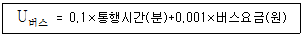
- 6000원
- 7000원
- 8000원
- 9000원
(정답률: 78%)
19. 개별행태모형에 대한 설명으로 틀린 것은?
- 타 존에 적용이 가능하다.
- 모델의 구조는 결정적 모형이다.
- 수요추정과정의 통합이 가능하다.
- 개인의 통행 행태 관련 자료를 활용한다.
(정답률: 68%)
20. 경전철(light rail transit)의 일반적인 특성으로 옳은 것은?
- 차량의 중량이 가볍다.
- 지하로만 운행한다.
- 고속전철에 비하여 건설비가 많이 든다.
- 시간당 수송용량이 지하철보다 많다.
(정답률: 88%)
2과목: 교통공학
21. 다음 중 계수분포에 해당하는 확률분포모형이 아닌 것은?
- Poisson Distribution
- Binomial Distribution
- Hypergeometric Distribution
- Exponential Distribution
(정답률: 49%)
22. 교통신호와 관련된 용어에 대한 설명이 틀린 것은?
- 신호주기 : 교차로 신호등에서 녹색 신호가 켜진 후 다시 녹색 신호가 켜지기까지의 시간
- 현시 : 교차로에서 동시에 통행할 수 있도록 각 방향 교통류에 부여되는 통행권
- 분할비 : 한 현시 내에서 유효 녹색시간이 차지하는 비율
- 출발지체시간 : 신호가 적색에서 녹색으로 바뀐 후 첫 번째 차량이 교차로를 통과하기까지의 손실시간
(정답률: 76%)
23. 아래와 같은 특징을 갖는 신호연동체계는?
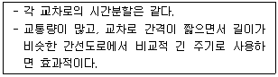
- 교호연동체계(alternate system)
- 동시연동체계(simultaneous system)
- 단순연동체계(simple progressive system)
- 가변연동체계(flexible progressive system)
(정답률: 65%)
24. 도로의 교통용량에 있어 기본 교통 용량의 정의로 옳은 것은?
- 실제의 도로 및 교통조건의 경우 특정 시간 중에 통과할 수 있는 최소 교통량
- 도로 및 교통조건이 이상적인 경우 차로 당 혼합차량의 시간당 최소 교통량
- 도로 및 교통조건이 이상적인 경우 차로 당 승용차의 시간당 최대 교통량
- 실제의 도로 및 교통조건의 경우 특정 시간 중에 통과할 수 있는 최대 교통량
(정답률: 74%)
25. 차량이 움직이는데 발생하는 엔진외부저항, 즉 주행저항에 속하는 것을 모두 고른 것은?
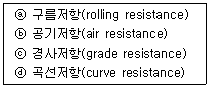
- ⓐ, ⓑ
- ⓐ, ⓑ, ⓒ
- ⓑ, ⓒ, ⓓ
- ⓐ, ⓑ, ⓒ, ⓓ
(정답률: 81%)
26. 병목흐름(Bottleneck flow)인 상태에서의 도착 차량수와 출발차량수를 누적하여 나타낸 아래의 시간-차량 누적 곡선에 대한 설명으로 옳지 않은 것은?
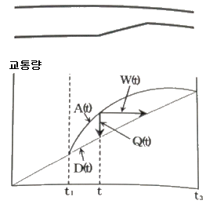
- 차량의 열은 t1에서 시작하여 t3까지 없어지지 않는다.
- t1과 t3 사이의 어떤 시간(t)에서의 열의 길이(Q(t))는 A(t) - D(t) 이다.
- t시간에 도착하는 차량은 W(t) 이후에 출발한다.
- 총열의 지체는 t3 - t1 이다.
(정답률: 56%)
27. 대기행렬이론에서 단일 서비스 시스템에 대한 설명으로 틀린 것은?
- 시스템 내의 평균차량대수는 서비스를 받고 있는 평균차량대수의 값과 같다.
- 평균대기행렬 길이는 시스템 내의 평균차량대수에서 서비스를 받고 있는 차량의 평균대수를 뺀 값이다.
- 시스템 내의 차량이 한 대도 없을 확률은 (1 - ρ) (ρ = 교통강도 또는 이용계수)와 같다.
- 시스템 내의 평균체류시간은 평균대기시간과 평균서비스시간을 합한 값과 같다.
(정답률: 69%)
28. 도로의 일정 구간을 주행하는 각 차량들의 속도가 동일하지 않은 경우 공간평균속도와 시간평균속도의 관계를 옳게 설명한 것은?
- 공간평균속도와 시간평균속도는 같다.
- 공간평균속도가 시간평균속도보다 작다.
- 공간평균속도가 시간평균속도보다 크다.
- 비교할 수 없다.
(정답률: 88%)
29. 교통량 조사방법으로 가장 부적합한 것은?
- 사진측량법
- 루프검지기 조사
- 주행차량이용법
- 가구방문 통행조사
(정답률: 74%)
30. 자유류 속도가 70km/h인 도로 구간의 차량정지선에 있는 차량이 출발하였을 때, 충격파의 속도(uw)가 –35km/h 이었다. 출발하는 차량의 속도는?
- 25 km/h
- 30 km/h
- 35 km/h
- 40 km/h
(정답률: 91%)
31. 어떤 도로의 3km 구간에서 이동차량방법(moving vehicle method)으로 측정한 결과 B차가 주행하면서 만난 반대방향 차량대수가 60대, A차가 추월한 차량이 4대, A차를 추월한 차량이 4대, A차의 주행시간이 5분, B차의 주행시간이 4분 이었을 때, A차가 달리는 방향의 평균 교통량은?
- 200 대/시
- 300 대/시
- 400 대/시
- 500 대/시
(정답률: 67%)
32. 신호교차로 접근로의 용량 산정 시, 기본 포화 교통류율이 2200pcphgpl이 되는 이상적인 조건으로 옳지 않은 것은?
- 50%의 녹색신호
- 승용창만의 교통류
- 경사가 없는 접근부
- 직진교통류로만 구성
(정답률: 88%)
33. 현장 관측자료를 이용한 속도와 밀도의 관계가 아래와 같을 때, 다음 설명 중 옳지 않은 것은?
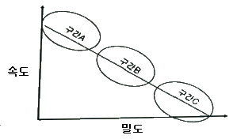
- 구간 A는 차량의 움직임이 상당히 자유로운 영역이다.
- 구간 B는 차량이 증가하면서 속도가 줄어든 영역이다.
- 구간 C는 Jam Density가 관측되는 구간이다.
- 용량은 구간 C에서 주로 관측된다.
(정답률: 81%)
34. 다음 중 도심부 신호교차로의 서비스수준을 분석할 때 고려하는 지체가 아닌 것은?
- 균일지체(uniform delay)
- 상관지체(interaction delay)
- 증분지체(incremental delay)
- 추가지체(initial queue delay)
(정답률: 66%)
35. 일련의 신호교차로에서의 교통흐름을 나타내는 시공도(time-space diagram)에서 관측할 수 있는 것으로만 나열한 것은?
- 차량진행대폭(bandwidth), 차량통행시간(travel time), 신호옵셋(offset)
- 차량통행시간(travel time), 신호옵셋(offset), 차량자유속도(free-flow speed)
- 신호옵셋(offset), 차량자유속도(free-flow speed), 차량진행대폭(bandwidth)
- 차량자유속도(free-flow speed), 차량진행대폭(bandwidth), 차량통행시간(travel time)
(정답률: 71%)
36. Webster 방식에 의한 지체를 최소로 하는 최적 주기(C) 산정식은? (단, L : 주기당 총 손실시간, Y : 현시별 임계차로군의 교통량비의 합)
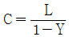
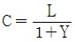
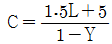
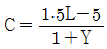
(정답률: 83%)
37. 어느 도로의 첨두시간 교통량이 1500대/시간이고 첨두시간 중 15분 최대교통량이 450대 일 때, 첨두시간계수(PHF)는?
- 0.78
- 0.83
- 0.88
- 0.93
(정답률: 90%)
38. 교통시설 설계 시 설계기준자동차의 제원 기준이 아닌 것은?
- 길이
- 축간거리
- 최소회전반경
- 엔진 배기량
(정답률: 90%)
39. 일정 시간 동안 특정 구간을 통과한 차량 5대의 속도가 아래와 같을 때, 공간 평균속도는?
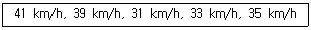
- 28.5 km/h
- 30.5 km/h
- 33.5 km/h
- 35.4 km/h
(정답률: 82%)
40. 고속도로 기본 구간의 이상적인 조건이 아닌 것은?
- 평지
- 차로 폭 3.0m 이상
- 측방 여유폭 1.5m 이상
- 승용차만으로 구성된 교통류
(정답률: 84%)
3과목: 교통시설
41. 설계속도가 120 km/h인 도로의 평면곡선부에 설치하는 완화곡선의 최소길이 기준은?
- 70m
- 60m
- 50m
- 40m
(정답률: 76%)
42. 차량이 85km/h 의 속도로 평지인 도로를 주행하고 있다. 도로의 마찰계수는 0.3, 지각반응시간이 2.5초 일 때, 주행중인 차량의 최소정지시거는?
- 약 128 m
- 약 154 m
- 약 206 m
- 약 234 m
(정답률: 73%)
43. 차로의 폭을 결정하는 요인으로 가장 거리가 먼 것은?
- 지역
- 도로의 구분
- 교통량
- 설계속도
(정답률: 52%)
44. 도로의 평면곡선설계에서 최소 평면곡선 반지름을 정할 때 고려하지 않아도 되는 것은?
- 편경사
- 곡선길이
- 설계속도
- 횡방향미끄럼마찰계수
(정답률: 67%)
45. 도로의 기능별 구분에 따른 최소 설계속도 기준이 옳지 않은 것은?
- 도시지역 국지도로 : 50km/h 이상
- 도시지역 집산도로 : 50km/h 이상
- 지방지역 산지 고속도로 : 100km/h 이상
- 지방지역 평지 고속도로 : 120km/h 이상
(정답률: 65%)
46. 평면교차와 그 접속기준이 옳은 것은?
- 교차하는 도로의 교차각은 45°이상이 되도록 한다.
- 교차로에서 자회전차로가 필요한 경우에는 직진차로와 통합하여 설치하여야 한다.
- 평면으로 교차하거나 접속하는 구간에 설치하는 변속차로에 관한 사항은 관할 경찰청장이 정한다.
- 교차로의 종단경사는 3% 이하이어야 한다.
(정답률: 52%)
47. 주차장의 주차단위구획과 관련한 설명으로 옳은 것은?
- 평행주차는 차로의 진행방향과 각도를 이루고 주차하는 것을 말한다.
- 30° 전진주차는 차로 진행방향으로 긴 주차 폭이 필요하다.
- 전진주차는 주차 시에 다소 시간이 소요되나 나올 때는 차로의 투시와 관련된 위험이 적어 바로 나올 수 있다.
- 공간을 효과적으로 이용하고 질서있는 주차를 위해 모든 주차장의 주차단위구획에 대하여 소형자동차를 설계기준자동차로 사용한다.
(정답률: 80%)
48. 노면이 시멘트 포장도로인 차도의 횡단경사 기준은?
- 1.0% 이상 1.5% 이하
- 1.5% 이상 2.0% 이하
- 2.0% 이상 2.5% 이하
- 2.5% 이상 3.0% 이하
(정답률: 71%)
49. 도로 설계 시 환경시설대의 설치기준으로 옳은 것은?
- 일반평면도로에서는 도로의 양측 끝에서 폭 15m의 환경시설대를 설치하는 것이 바람직하다.
- 고가도로에서 환경시설대를 설치하지 아니한다.
- 자동차 전용도로에는 도로의 양측 차도 끝에서부터 폭 20m의 환경시설대를 설치한다.
- 도로 주변 건축물이 낮게 지어져 차음효과가 없는 경우 환경시설대의 폭을 축소할 수 있다.
(정답률: 45%)
50. 도로의 구조·시설 기준에 관한 규칙에 따르면 도로의 계획목표연도는 공용개시 계획연도를 기준으로 몇 년 이내로 정하는가?
- 5년
- 10년
- 15년
- 20년
(정답률: 56%)
51. 화물터미널 설계 시 고려해야 할 시설로 가장 거리가 먼 것은?
- 화물적하대
- 주유소, 정비소
- 아프론(적하대 전면 기동공간)
- 여객관제시설
(정답률: 62%)
52. 인터체인지의 연결로 설계 시 유출입 유형의 일관성을 유지할 경우 얻게 되는 장점이 아닌 것은?
- 차로 변경 횟수를 줄인다.
- 운전자의 혼란을 줄인다.
- 직진 교통과의 마찰을 줄인다.
- 도로 안내 표지를 복잡하게 할 수 있다.
(정답률: 88%)
53. 도시지역 차도의 평면곡선부 최대편경사 기준으로 옳은 것은?
- 4% 이하
- 6% 이하
- 8% 이하
- 10% 이하
(정답률: 77%)
54. 입체교차 변속차로의 설계에 대한 설명으로 옳은 것은?
- 본선 설계속도가 80km/h 인 경우 변속차로 변이구간의 길이는 최소 60m 이상으로 하여야 한다.
- 변속차로의 길이는 연결로가 2차로인 경우 해당 기준의 1.5배 이상으로 하여야 한다.
- 본선 종단경사의 크기에 따른 감속차로의 길이 보정률은 최대 1.50 비율 이하로 하여야 한다.
- 본선 종단경사의 크기에 따른 가속차로의 길이 보정률은 최대 1.35 비율 이하로 하여야 한다.
(정답률: 45%)
55. 자동차 전용도로의 설계속도는 최소 얼마 이상으로 하는가? (단, 자동차 전용도로가 도시지역에 있거나 소형차도로인 경우는 고려하지 않는다.)
- 60 km/h
- 70 km/h
- 80 km/h
- 90 km/h
(정답률: 75%)
56. 도시지역의 일반도로에 주정차대를 설치하는 경우의 최소 폭 기준으로 옳은 것은? (단, 소형자동차를 대상으로 하는 주정차대의 경우는 고려하지 않는다.)
- 1.5m
- 2.0m
- 2.5m
- 3.0m
(정답률: 58%)
57. 노상시설에 해당하지 않는 것은?
- 가로등
- 가로수
- 공동구
- 방호울타리
(정답률: 66%)
58. 교차로 진입속도가 50 km/h, 교차로 횡단거리 20m, 차량의 가속도 5.0 m/s2, 차량길이 4m 일 때 적정 황색 시간은? (단, 운전자 반응시간은 1초이다.)
- 2.1초
- 3.1초
- 4.1초
- 5.1초
(정답률: 65%)
59. 도로의 부대시설 중 체인탈착장의 설계 시 유의사항에 대한 설명으로 틀린 것은?
- 체인탈착장에는 조명 설비를 설치한다.
- 체인탈착장으로 사용되는 부분은 포장을 하고, 교통섬을 설치하는 것이 원칙이다.
- 주차 면은 보통의 주차 면보다 50cm 정도 넓게 하는 것이 바람직하다.
- 체인탈착장의 경사는 주차 자동차의 종방향으로 2% 이하, 횡방향으로 3% 이하로 하고 배수에 충분한 주의를 기울여야 한다.
(정답률: 68%)
60. 노상주차장의 구조·설비기준으로 틀린 것은? (단, 해당 지방자치단체의 조례로 따로 정하거나 기타 사항의 경우는 고려하지 않는다.)
- 주간선도로에 설치하여서는 아니 된다.
- 종단경사도(자동차 진행방향의 기울기)가 4%를 초과하는 도로에 설치하여서는 아니 된다.
- 고속도로, 자동차전용도로로 또는 고가도로에 설치하여서는 아니 된다.
- 너비 8미터 미만의 도로에 설치하여서는 아니 된다.
(정답률: 54%)
4과목: 도시계획개론
61. 도시계획 과정에서 여러 종류의 변수들이 서로 어떤 관계를 갖는지 분석하는 방법으로 옳지 않은 것은?
- 두 변수의 관계가 얼마나 밀접한가를 측정하기 위해 산포도분석을 시행한다.
- 추정된 회귀 모형이 표본자료를 얼마나 잘 설명하는가는 결정계수로 파악한다.
- 다중회귀분석은 하나의 종속변수와 여러 개의 독립변수 사이의 관계를 추정할 수 있다.
- 회귀분석은 둘 또는 그 이상의 변수들 간에 존재하는 관련성을 분석하기 위해 시행한다.
(정답률: 51%)
62. 토지구획정리사업에 있어서의 환지설계방법 중 교통 여건, 토지이용상황 등 모든 여건이 토지 가격에 의해 나타난다는 전제 하에 사업 전의 토지 가격을 사업종료 후의 토지 가격에 비례해서 환지하는 방식은?
- 면적식 환지
- 비례식 환지
- 절충식 환지
- 평가식 환지
(정답률: 43%)
63. 주거 단지 내 도로계획 시 일반적 고려사항이 아닌 것은?
- 곡선형 도로로 감속 유도
- 단지 내 도로의 과속 방지턱 설치
- 원활한 통과를 위한 통과도로의 최대화
- 원활한 접근을 위한 조직적 도로패턴 계획
(정답률: 71%)
64. 용도지구의 종류가 아닌 것은?
- 고도지구
- 경관지구
- 방재지구
- 재개발지구
(정답률: 68%)
65. 재정계획에 있어서 계속되는 사업이라도 예산 편성 시 신규사업처럼 능률성, 효과성, 사업의 확대, 축소 여부를 새로이 분석·검토하고 사업의 우선순위를 결정하여 예산과 사업계획에 대한 결정을 하는 제도는?
- 계획예산제도
- 복식예산제도
- 영기준예산제도
- 성과주의예산제도
(정답률: 38%)
66. 계획이론에 대한 허드슨(Hudson)의 분류에서 린드블룸(Lindblom)이 주창한 것으로 지속적인 조정과 적용을 통해 계획의 목표를 추구하는 접근 방법을 제시한 계획이론은?
- 종합적 계획(Synoptic Planning)
- 옹호적 계획(Advocacy Planning)
- 점진적 계획(Incremental Planning)
- 교류적 계획(Transactive Planning)
(정답률: 73%)
67. 국토의 계획 및 이용에 관한 법률에서 정의하는 기반시설 중 '공동구'가 해당하는 시설은?
- 방재시설
- 보건위생시설
- 환경기초시설
- 유통·공급시설
(정답률: 51%)
68. 다음 중 아디케스법의 기본 개념으로 옳은 것은?
- 재개발 계획
- 토지 구획 정리
- 신도시 개발 계획
- 도시의 장기 발전계획
(정답률: 56%)
69. 토지이용 결정이론에서 선형지대이론의 특징으로 옳은 것은?
- 인종별·집단별 주거적 토지이용
- 문화적 차이에 의한 주거적 토지이용
- 사회·경제적 지위에 따른 주거적 토지이용
- 가족·소비·직장 중심주의에 의한 주거적 토지이용
(정답률: 63%)
70. 기능 및 주제에 따른 도시공원의 종류와 내용으로 옳지 않은 것은?
- 수변공원 : 도시의 하천가·호숫가 등 수변공간을 활용하여 도시민의 여가·휴식을 목적으로 설치하는 공원
- 역사공원 : 도시의 역사적 장소나 시설물, 유적·유물 등을 활용하여 도시민의 휴식·교육을 목적으로 설치하는 공원
- 체육공원 : 주로 운동경기나 야외활동 등 체육활동을 통하여 건전한 신체와 정신을 배양함을 목적으로 설치하는 공원
- 문화공원 : 근린생활권으로 구성된 지역생활권 거주자의 보건·휴양 및 정서생활의 향상에 이바지하기 위하여 설치하는 공원
(정답률: 74%)
71. 도로의 기능별 구분 중 주간선도로를 집산도로 또는 주요 교통발생원과 연결하여 시·군 교통의 집산기능을 하고 근린주거구역의 외곽을 형성하는 도로는?
- 국지도로
- 일반도로
- 특수도로
- 보조간선도로
(정답률: 66%)
72. 도시의 근린생활권 중 공간적 범위가 큰 단계에서 작은 단계로 올바르게 나열한 것은?
- 근린주구 – 근린분구 - 인보구
- 근린주구 – 인보구 - 근린분구
- 근린분구 – 근린주구 - 인보구
- 인보구 – 근린주구 – 근린분구
(정답률: 74%)
73. 국토의 계획 및 이용에 관한 법률에 의한 용도지역 중 관리지역에 해당되지 않는 것은?
- 계획관리지역
- 보존관리지역
- 보전관리지역
- 생산관리지역
(정답률: 44%)
74. 보행자전용도로의 결정기준으로 옳지 않은 것은?
- 보행의 쾌적성을 높이기 위하여 녹지체계와의 연관성을 고려할 것
- 보행자의 통행으로 인하여 차량통행에 지장이 많을 것으로 예상되는 지역에 설치할 것
- 보행자통행량의 주된 발생원과 버스정류장·지하철역 등 대중교통시설이 체계적으로 연결되도록 할 것
- 도심지역·부도심지역·주택지·학교 및 하천주변지역 등에서는 일반도로와 그 기능이 서로 보완관계가 유지되도록 할 것
(정답률: 66%)
75. 도시·군계획시설로서 도로의 규모별 구분으로 옳지 않은 것은?
- 소로 3류 : 폭 8m 미만
- 중로 3류 : 폭 12m 이상 ~ 15m 미만
- 대로 3류 : 폭 20m 이상 ~ 25m 미만
- 광로 3류 : 폭 40m 이상 ~ 50m 미만
(정답률: 60%)
76. 상위 계획에서 하위 계획 순으로 올바르게 나열한 것은?
- 국토계획 → 지역계획 → 도시계획 → 단지계획
- 단지계획 → 국토계획 → 지역계획 → 도시계획
- 국토계획 → 지역계획 → 단지계획 → 도시계획
- 단지계획 → 국토계획 → 도시계획 → 지역계획
(정답률: 76%)
77. 케빈 린치(Kevin Lynch)가 주장한 도시의 이미지를 결정하는 구성요소에 해당하지 않는 것은?
- 통로(path)
- 광장(square)
- 결절점(node)
- 상징물(landmark)
(정답률: 69%)
78. 토지이용계획을 입지계획·시설 및 규모 계획·입지 배분 계획으로 분류할 때, 입지배분 계획의 내용으로 적절하지 않은 것은?
- 밀도 배분하기
- 공간구조 만들기
- 연결체계 만들기
- 시설규모 예측하기
(정답률: 52%)
79. 도시 및 지역경제 분석 방법 중의 하나로, 지역산업의 변화를 내적요인과 외적요인에 해당하는 국가 전체의 성장요인(national share), 산업구조적 요인(industry mix), 지역의 경쟁력 요인(local factor)으로 나누어 파악하고, 이를 통해 지역의 산업성장을 분석하는 방법은?
- 경제기반모형
- 다중회귀모형
- 변이할당모형
- 투입산출모형
(정답률: 44%)
80. 다음과 같은 조건을 가진 도시의 공업지역의 소요면적은?
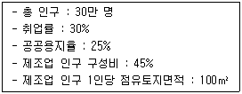
- 4.⑤ ha
- 54 ha
- 4⑤ ha
- 540 ha
(정답률: 46%)
5과목: 교통관계법규
81. 노상주차장의 장애인 전용주차구획 설치에 관한 내용 중 ( ) 에 공통으로 들어갈 숫자로 옳은 것은?
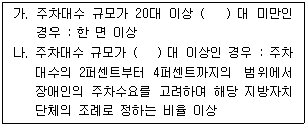
- 50
- 60
- 70
- 80
(정답률: 72%)
82. 도로를 횡단하는 자전거 운전자의 안전을 위하여 기준에 따라 자전거횡단도를 설치할 수 있는 자는?
- 시장
- 도로관리청
- 지방경찰청장
- 국토교통부장관
(정답률: 55%)
83. 도로법상 도로의 종류에 따른 도로관리청의 연결로 옳지 않은 것은? (단, 국가지원지방도는 특별시, 광역시 또는 특별자치시 관할구역에 있는 구간의 경우는 고려하지 않는다.)
- 시도 – 관할 시장
- 일반국도 - 국토교통부장관
- 고속도로 – 한국도로공사 사장
- 국가지원지방도 – 도지사·특별자치도지사
(정답률: 70%)
84. 국가기간교통망계획과 다른 계획과의 관계에 관한 설명으로 옳은 것은?
- 다른 법령에 따른 교통·물류 관련 계획은 국가기간교통망계획보다 우선한다.
- 국가기간교통망계획은 「국토기본법」에 따른 국토종합계획과 조화를 이루어야 한다.
- 관계 중앙행정기관의 장 및 지방자치단체의 장은 토지 이용에 관한 계획을 수립할 때 국가기간교통망계획을 반영하지 않아도 무방하다.
- 국토교통부장관은 교통·물류 및 토지 이용에 관한 계획이 국가기간교통망계획과 맞지 아니하다고 판단되더라도 지방자치단체의 장에게 해당 계획을 조정할 것을 요청할 수 없다.
(정답률: 73%)
85. 도로법에 의한 도로의 종류와 등급 분류에 해당되지 않는 것은?
- 고속국도
- 일반국도
- 간선도로
- 특별시도·광역시도
(정답률: 69%)
86. 도시교통의 원활한 소통과 교통편의 증진을 위해 지정하는 교통혼잡 특별관리구역과 교통혼잡 특별관리시설물의 지정기준으로 옳지 않은 것은? (단, “혼잡시간대”란 일정한 지역이 그 지역을 통과하거나 둘러싼 도로 중 1개 이상의 도로에서 시간대별 평균 통행속도가 시속 15킬로미터 미만인 상태를 뜻한다.)
- 교통혼잡 특별관리시설물 지정기준을 적용하는 경우 주차장을 공동으로 사용하는 2개 이상의 시설물은 하나의 시설물로 본다.
- 혼잡시간대가 토·일요일과 공휴일을 포함한 주 중 21회 이상 발생하는 경우 해당지역을 교통혼잡 특별관리구역으로 지정할 수 있다.
- 시설물을 둘러싼 도로 중 1개 이상의 도로에서 혼잡시간대가 토·일요일과 공휴일을 포함한 주 중 가장 많이 발생하는 날을 기준으로 하루 3회 이상 발생할 경우 교통혼잡 특별관리시설물로 지정할 수 있다.
- 혼잡시간대가 가장 많이 발생하는 날의 혼잡시간대 중 1회 이상의 혼잡시간대에 해당 도로를 통하여 해당 시설물로 진입하거나 진출하는 교통량이 그 도로 한쪽 방향 교통량의 5펀센트 이상일 경우 교통혼잡 특별관리시설물로 지정할 수 있다.
(정답률: 55%)
87. 국토교통부장관이 도시교통정비구역으로 지정·고시할 수 있는 도시의 인구 규모 기준이 옳은 것은?
- 10만명 이상
- 20만명 이상
- 30만명 이상
- 50만명 이상
(정답률: 76%)
88. 도로교통법의 목적과 가장 관계가 먼 것은?
- 교통위반자를 계몽한다.
- 원활한 교통을 확보한다.
- 교통상의 장해를 제거한다.
- 교통상의 모든 위험을 방지한다.
(정답률: 74%)
89. 국가통합교통체계효율화법규상 국가교통 데이터베이스 점검단 구성 및 운영에 관한 설명으로 옳지 않은 것은?
- 국토교통부장관은 전문가가 참여하는 국가교통 데이터베이스 점검단을 구성·운영할 수 있다.
- 국가교통 데이터베이스 점검단장은 참여 전문가 중에서 국토교통부장관이 위촉하는 자로 한다.
- 국가교통 데이터베이스 점검단의 구성과 운영에 관한 사항은 국토교통부장관이 정하여 고시한다.
- 국가교통 데이터베이스 점검단에 참여하는 전문가는 25명 이내의 교통데이터베이스, 교통조사 등에 관한 학식과 경험이 풍부한 자로 한다.
(정답률: 61%)
90. 시·군·구 교통안전정책심의위원회에 관한 설명으로 옳지 않은 것은?
- 위원장은 시·도지사가 된다.
- 지역별 교통안전에 관한 주요 정책을 심의한다.
- 지역교통안전기본계획을 심의한다.
- 구성 및 운영 등에 관하여 필요한 사항은 대통령령으로 정하는 바에 따라 해당 지방자치단체의 조례로 정한다.
(정답률: 49%)
91. 국가통합교통체계효율화법령상 대통령령으로 정하는 대구모 개발사업의 범위와 면적 기준이 옳지 않은 것은?
- 택지개발사업 : 100만 m2 이상
- 도시개발사업 : 100만 m2 이상
- 역세권 개발사업 : 100만 m2 이상
- 기업도시개발사업 : 100만 m2 이상
(정답률: 63%)
92. 교통안전법상 국가교통안전기본계획은 몇 년 단위로 수립하여야 하는가?
- 1년
- 2년
- 3년
- 5년
(정답률: 79%)
93. 도로교통법규에 따라 차도의 노면으로부터 높이 4.0m인 구조물의 전면에 차 높이 제한표지를 설치하고자 할 때 표시하여야 할 수치는?
- 3.7m
- 3.8m
- 3.9m
- 4.0m
(정답률: 55%)
94. 주차장의 수급(需給) 실태조사에 대한 설명으로 옳지 않은 것은?
- 실태조사의 주기는 3년으로 한다.
- 원형 형태로 조사구역을 설정하되 조사구역 바깥경계선의 최대거리가 400m를 넘지 아니하도록 한다.
- 시장·군수 또는 구청장은 기준에 따라 설정된 조사구역별로 주차수요조사와 주차시설 현황조사로 구분하여 실태조사를 하여야 한다.
- 아파트단지와 단독주택단지가 섞여 있는 지역의 경우네는 주차시설 수급의 적정성, 지역적 특성 등을 고려하여 같은 특성을 가진 지역별로 조사구역을 설정한다.
(정답률: 52%)
95. 부설주차장 설치의무가 면제되는 주차대수 규모 기준으로 옳은 것은?
- 100대 이하
- 200대 이하
- 300대 이하
- 400대 이하
(정답률: 57%)
96. 국가통합교통체계효율화법에 따른 국가기간교통망계획의 수립에 관한 아래 내용 중 ㉠, ㉡에 들어갈 숫자로 모두 옳은 것은?
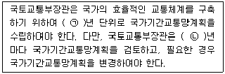
- ㉠ : 10, ㉡ : 10
- ㉠ : 10, ㉡ : 5
- ㉠ : 20, ㉡ : 10
- ㉠ : 20, ㉡ : 5
(정답률: 62%)
97. 다음 중 도로교통법 횡단보도의 설치기준으로 옳지 않은 것은?
- 횡단보도에는 횡단보도표시와 횡단보도표지판을 설치할 것
- 횡단보도는 육교·지하도 및 다른 횡단보도로부터 300m 이내에는 설치하지 아니할 것
- 횡단보도를 설치하고자 하는 장소에 횡단보행자용 신호기가 설치되어 있는 경우에는 횡단보도표시를 설치할 것
- 횡단보도를 설치하고자 하는 도로의 표면이 포장이 되지 아니하여 횡단보도표시를 할 수 없는 때에는 횡단보도표지판을 설치할 것
(정답률: 74%)
98. 도로법에 따라 도로 구조의 파손 방지, 미관의 훼손 또는 교통에 대한 위험 방지를 위하여 필요하면 소관 도로의 경계선에서 20m(고속국도의 경우 50m)를 초과하지 아니하는 범위에서 도로관리청이 지정할 수 있는 것은?
- 보존구역
- 연도구역
- 접도구역
- 풍치구역
(정답률: 66%)
99. 도시교통정비촉진법상 원칙적으로 도시교통정비지역을 지정·고시할 수 있는 자는?
- 국무총리
- 경찰청장
- 국토교통부장관
- 행정안전부장관
(정답률: 73%)
100. 국가통합교통체계효율화법에서 규정하는 타당성 평가에 관한 설명으로 옳지 않은 것은?
- 국토교통부장관은 대통령령으로 정하는 바에 따라 투자평가지침을 작성하여 고시하여야 한다.
- 공공교통시설 개발사업과 민간투자사업 모두 타당성 평가서를 국토교통부장관에게 제출하여야 한다.
- 사업시행자는 공공교통시설 개발사업을 시작하기 전에 투자평가지침에 따라 해당 사업의 타당성을 평가하여야 한다.
- 교통시설개발사업 시행자는 타당성 평가 실시 결과에 예비타당성 조사 실시 결과 간 현저한 차이가 발생한 경우에는 국토교통부장관과 협의를 거쳐 관계 행정기관의 장에게 필요한 조치를 할 것을 요청할 수 있다.
(정답률: 61%)
6과목: 교통안전
101. 영국의 수미드(R. J. Smeed)가 1938년에 발표한 교통사고 예측 모형에서 교통사고 사망자 수를 나타내는데 이용한 변수로만 나열된 것은?
- 도로길이, 화물유통량
- 인구수, 국민 총 생산
- 인구수, 자동차 보유대수
- 자동차 보유대수, 면허소지자 수
(정답률: 81%)
102. 도로운영과 사고에 관한 설명으로 옳지 않은 것은?
- 노상주차를 금지하면 사고가 줄어든다.
- 교차로 부근에 주차를 하면 사고가 많아진다.
- 일방통행도로는 대향교통이 없으므로 정면충돌사고는 없지만 측면충돌사고가 많다.
- 주 교통류에의 출입이 특정지점에서만 허용되는 완전출입제한은 교통사고감소에 효과적이다.
(정답률: 67%)
103. 사고다발지점 선정 방법 중 부상(사고)의 유형에 따라 가중치를 부여하여 합계 점수가 가장 높은 지점을 선정하는 방법은?
- 사고율에 의한 방법
- 사고피해정도에 의한 방법
- 도로의 위험도 지수에 의한 방법
- 사고발생 빈도수에 의한 방법
(정답률: 77%)
104. 사고위험이 높은 장소를 선정할 때 사용하지 않는 지표는?
- 사고율
- 총 사고건수
- 사고피해정도
- 사고장소의 면적
(정답률: 82%)
1⑤. 차량의 미끄럼거리 추정에 관한 설명이 틀린 것은?
- 직선 미끄럼의 경우 차량의 미끄럼거리는 그 차량의 모든 바퀴들의 미끄럼 흔적 중 가장 긴 미끄럼 흔적의 길이로 한다.
- 양후륜의 미끄럼 흔적들 모두가 전륜의 미끄럼 흔적을 벗어나지 않으면 직선 미끄럼으로 간주한다.
- 미끄럼 흔적 중간에 갭이 있을 경우 갭을 포함하여 미끄럼거리고 간주한다.
- 미끄럼 흔적의 길이로부터 차량의 초기 속도를 추정할 수 있다.
(정답률: 81%)
106. 사고심각도기법 중 EPDO가 뜻하는 내용은?
- 등가물피사고
- 등가사망사고
- 등가중상사고
- 등가부상사고
(정답률: 80%)
107. 고속도로의 사고율이 평균 이하인 도로의 특징과 가장 관계가 먼 것은?
- 넉넉한 도로폭
- 넓게 포장한 길어깨
- 연석의 설치
- 비교적 직선인 선형
(정답률: 73%)
108. 사고충돌도의 표시기호에 대한 설명으로 옳지 않은 것은?
- : 정면 충돌사고
- : 전복사고
- : 후면 추돌사고
- : 주차차량 충돌사고
(정답률: 57%)
109. 도로교통 안전프로그램의 내용과 가장 거리가 먼 것은?
- 노변위험 관리
- 비보호좌회전 확대
- 교차로 설계 및 통제
- 교통약자에 대한 조치
(정답률: 79%)
110. 과속방지턱(speed hump)에 대한 설명으로 옳지 않은 것은?
- 연속형 과속방지턱은 20~90m의 간격으로 설치함을 원칙으로 한다.
- 일반적으로 낮은 속도에서는 비교적 물리적인 저항이 적고 완만하게 통과할 수 있도록 해주어야 한다.
- 포장 재료나 도색 등을 이용하여 주변의 도로 환경과 조화를 도모할 경우에는 도로 경관 향상에 기여할 수 있다.
- 차량이 과속으로 주행할 경우 차량에게 상처나 끌림, 요동을 일으키도록 과속방지턱의 높이를 조정하여야 한다.
(정답률: 62%)
111. 어느 차량이 평지의 도로에서 단속적으로 20m에 이어 40m의 바퀴자국을 남기고 정지하였을 경우 이 차량의 초기 속도는? (단, 노면 마찰계수는 0.5이다.)
- 약 75 km/h
- 약 87 km/h
- 약 90 km/h
- 약 95 km/h
(정답률: 78%)
112. 약한 지주와 강한 레일로 구성되며 충격차량을 억제하기 위하여 주로 레일요소의 작용에 의존하는 노변방호책은?
- 연성방호책
- 강성방호책
- 반강성방호책
- 초강성방호책
(정답률: 61%)
113. 개선 사업을 시행하기 전 연평균 사고건수가 10건, 연평균 ADT가 6000대인 교차로에 사고 감소율이 20%인 교통안전사업을 시행한 후 예측되는 연평균 사고감소 건수는? (단, 이 교차로의 사업시행 후 연평균 ADT는 9000대로 예측된다.)
- 1건
- 3건
- 6건
- 9건
(정답률: 58%)
114. 차량 A가 10m 높이의 언덕에서 추락하였다. 추락 후 노면에 떨어진 지점까지의 수평거리가 17m 일 경우 차량 A 의 초기속도는?
- 약 38 km/h
- 약 41 km/h
- 약 43 km/h
- 약 49 km/h
(정답률: 64%)
115. 교통안전 전략으로서 노출통제에 해당하는 것은?
- 속도 제한
- 재택 근무
- 운전자 교육
- 가로 조명 증설
(정답률: 74%)
116. 사고다발지역 선정 및 도로안전개선사업 시행의 중요성에 대한 설명 중 옳지 않은 것은?
- 위험성이 상대적으로 적은 지점이 선정될 경우, 불필요한 개선사업시행으로 인한 예산 낭비를 초래한다.
- 위험성이 높아 시급한 개선이 필요한 지점을 선정하지 못할 경우, 사고로 인해 유발되는 인명과 재산의 손실을 초래한다.
- 한정된 예산의 효율적 활용이라는 측면에서 개선산업 시행의 우선순위를 합리적으로 결정하는 것은 매우 중요한 과정이다.
- 사고다발지역 선정 및 개선사업 시행의 우선순위 결정은 민감한 사안이므로 도로의 형태나 지역적 특성에 상관없이 항상 동일한 기준에 따라 결정되어야 한다.
(정답률: 84%)
117. 지구교통개선사업 등에 널리 적용되고 있는 교통 정온화(Traffic calming) 기법 중 주행속도의 억제 기능을 갖는 대책이 아닌 것은?
- 트랜짓 몰
- 쵸커
- 시케인
- 라운드어바웃
(정답률: 63%)
118. 차가 주행할 때 타이어의 공기압이 적은 상태이면 타이어 접지면이 압축되어 변형하면서 회전하므로 타이어가 물결치는 모양이 되어 파열의 원인이 되는 현상을 무엇이라 하는가?
- 패드 현상
- 로드 홀딩 현상
- 스탠딩 웨이브 현상
- 하이드로 플래닝 현상
(정답률: 77%)
119. 다음의 교통안전 조치 중 이동성을 저해할 수 있는 것은?
- 에어백
- 교통진정(traffic calming)
- 충격완화시설
- 비상서비스 개선
(정답률: 77%)
120. 곡선반경 250m인 도로 구간에서 편주현상(yawing)이 일어나 차량이 전복하는 사고가 발생하였다. 편주혼 시작점의 곡선반경 250m, 편경사 5%, 횡방향 마찰계수가 0.4일 때, 편주가 시작되는 점에서 이 차량의 주행속도는 얼마인가?
- 약 110.5 km/h
- 약 115.5 km/h
- 약 119.5 km/h
- 약 123.5 km/h
(정답률: 70%)